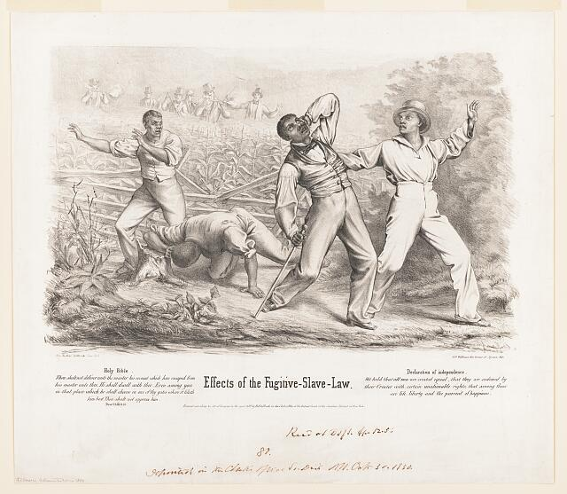

Directions: Work through the five stations in order. Each station holds one record of the settlement of 1850: the bargain proposed, the Union pleaded for, the warning delivered, the law enacted, and the law pictured for northern readers. For each record, state what it gives, what it takes, and who is made to act. At the end, judge whether the Compromise of 1850 was a settlement of the slavery question or an armistice whose terms guaranteed the fighting would resume, and defend your judgment from the documents.
Source: Henry Clay, resolutions introduced in the Senate, January 29, 1850, Congressional Globe, 31st Congress, 1st Session, pages 244 to 247, in the Teaching American History transcription of the Globe text. Cuts are marked with ellipses and disclosed here. Only four of the eight resolutions are printed.
It being desirable, for the peace, concord, and harmony of the Union of these states, to settle and adjust amicably all existing questions of controversy between them arising out of the institution of slavery upon a fair, equitable and just basis: therefore, Resolved, that California, with suitable boundaries, ought, upon her application to be admitted as one of the states of this Union, without the imposition by Congress of any restriction in respect to the exclusion or introduction of slavery within those boundaries. ... Resolved, that it is inexpedient to abolish slavery in the District of Columbia whilst that institution continues to exist in the state of Maryland, without the consent of that state, without the consent of the people of the District, and without just compensation to the owners of slaves within the District. But, resolved, that it is expedient to prohibit, within the District, the slave trade in slaves brought into it from states or places beyond the limits of the District ... Resolved, that more effectual provision ought to be made by law, according to the requirement of the Constitution, for the restitution and delivery of persons bound to service or labor in any state, who may escape into any other state or territory in the Union.
State what this record gives each section. Name the gain Clay offers the North in the California and District resolutions, and the gain he offers the South in the fugitive resolution, quoting the phrase that carries it.
Who is made to act in this record, and on what stated basis? Quote the preamble's statement of the basis, and name the institution whose questions the preamble says are being settled.
Source: Daniel Webster, speech in the Senate, March 7, 1850, the Seventh of March speech, in the text reprinted in The U.S. Constitution, A Reader, published by Hillsdale College. Cuts are marked with ellipses and disclosed here.
Mr. President: I wish to speak today, not as a Massachusetts man, nor as a Northern man, but as an American, and a member of the Senate of the United States. ... I speak today for the preservation of the Union. “Hear me for my cause.” I speak today, out of a solicitous and anxious heart, for the restoration to the country of that quiet and that harmony which make the blessings of this Union so rich, and so dear to us all. ... I hear with pain, and anguish, and distress, the word secession, especially when it falls from the lips of those who are eminently patriotic, and known to the country, and known all over the world, for their political services.
State the identity Webster claims for himself in his opening sentence, and the two objects he says he speaks for, quoting his phrases.
What does this record take from Webster himself? Answer from the lesson record: name the constituency he breaks with, and the word in this excerpt whose sound he says gives him pain.
Source: John C. Calhoun, speech on the admission of California and the general state of the Union, delivered in the Senate, March 4, 1850, read aloud by Senator James Mason of Virginia, in The Works of John C. Calhoun, edited by Richard K. Crallé. Cuts are marked with ellipses and disclosed here.
I have, Senators, believed from the first that the agitation of the subject of slavery would, if not prevented by some timely and effective measure, end in disunion. ... It is a great mistake to suppose that disunion can be effected by a single blow. The cords which bind these States together in one common Union are far too numerous and powerful for that. Disunion must be the work of time. It is only through a long process, and successively, that the cords can be snapped until the whole fabric falls asunder. Already the agitation of the slavery question has snapped some of the most important, and has greatly weakened all the others. ... If the agitation goes on, the same force, acting with increased intensity, as has been shown, will finally snap every cord, when nothing will be left to hold the States together except force.
State Calhoun's mechanism of disunion in his own image. What snaps, in what order, and what is left holding the states together at the end of the process?
Who is made to act in this record, and who is warned? State what Calhoun says must be prevented, and by what kind of measure, quoting his phrase.
Source: Fugitive Slave Act, September 18, 1850, sections 5, 6, 7, and 8, in the Avalon Project at Yale Law School transcription of the Statutes at Large. Cuts are marked with ellipses and disclosed here.
... they are hereby authorized and empowered ... to summon and call to their aid the bystanders, or posse comitatus of the proper county, when necessary ... and all good citizens are hereby commanded to aid and assist in the prompt and efficient execution of this law, whenever their services may be required ... In no trial or hearing under this act shall the testimony of such alleged fugitive be admitted in evidence ... any person who shall knowingly and willingly obstruct, hinder, or prevent such claimant ... or shall aid, abet, or assist such person so owing service or labor as aforesaid, directly or indirectly, to escape ... or shall harbor or conceal such fugitive ... shall, for either of said offences, be subject to a fine not exceeding one thousand dollars, and imprisonment not exceeding six months ... in all cases where the proceedings are before a commissioner, he shall be entitled to a fee of ten dollars in full for his services in each case, upon the delivery of the said certificate to the claimant ... or a fee of five dollars in cases where the proof shall not, in the opinion of such commissioner, warrant such certificate and delivery ...
State what this law takes from the accused person. Quote the sentence on testimony, and state where in the law a jury trial would appear if the law granted one.
Who is made to act under this law besides the claimant? Name three classes of people the excerpt commands or punishes, and give the fee figures and the fine and prison figures exactly as printed.
Source: Theodor Kaufmann, "Effects of the Fugitive-Slave-Law," lithograph, 1850, Library of Congress, as presented in the audited TPSP bank record for this print. The bank record describes the image rather than reproducing a second copy here; the figure below is the Library of Congress file of the same print. The description below is the bank record's text, quoted in full.

An abolitionist lithograph showing four Black men, possibly freedmen, ambushed by six armed white men in a cornfield. One white man fires his musket while two others reload; two of the Black men have been shot, one fallen and one clutching his bleeding head, while the other two react in horror. Below the image are two quotations: one from the Bible, "Thou shalt not deliver unto the master his servant which has escaped from his master unto thee... Thou shalt not oppress him," and one from the Declaration of Independence, "We hold that all men are created equal."
State what this print gives its northern viewer that the statute in Station 4 does not. Name the scene's numbers, four and six, and the two texts quoted below the image.
Who is made to act in this record, and how? State the command the biblical quotation lays on its reader, and connect it to the duty Station 4 lays on bystanders.
Build the ledger from the five stations. For each record, state what it gives, what it takes, and who is made to act, in one sentence each grounded in the station.
| Record | What it gives | What it takes | Who is made to act |
|---|---|---|---|
| Clay's resolutions, 1850 | |||
| Webster's Seventh of March speech | |||
| Calhoun's speech of March 4 | |||
| The Fugitive Slave Act | |||
| Kaufmann's lithograph |
Close the file with a verdict. Judge whether the Compromise of 1850 was a settlement of the slavery question or an armistice whose terms guaranteed the fighting would resume. Defend your judgment against the strongest record on the other side, using evidence from at least two stations, one of them Station 4.
State what the record gives each section. To the North: California admitted without a congressional restriction on slavery within its boundaries, in practice under its free constitution, and the slave trade prohibited in the District of Columbia for slaves brought in from beyond the District. To the South: slavery in the District protected against abolition without Maryland's consent, the District's consent, and compensation, and, in the fugitive resolution, more effectual provision by law for the restitution and delivery of persons bound to service or labor who escape. Credit requires one gain on each side with the fugitive phrase quoted.
Who is made to act, and on what basis? Congress is made to act, by passing the measures the resolutions propose. The stated basis is the preamble: to settle and adjust amicably all existing questions of controversy between the states arising out of the institution of slavery upon a fair, equitable and just basis. The institution named is slavery.
State the identity claimed and the two objects. Webster claims the identity of an American, and a member of the Senate of the United States, expressly not a Massachusetts man nor a Northern man. He speaks, in his phrases, for the preservation of the Union and for the restoration to the country of that quiet and that harmony which make the blessings of this Union so rich. Credit requires both quoted phrases.
What does the record take from Webster? It takes his standing with his antislavery constituency in Massachusetts and New England, who received the speech as a fall and answered it in Whittier's “Ichabod.” The word whose sound gives him pain in the excerpt is secession: I hear with pain, and anguish, and distress, the word secession.
State the mechanism of disunion in his image. The cords that bind the states together in one common Union snap successively, through a long process, not by a single blow. The agitation of the slavery question has already snapped some of the most important cords and greatly weakened all the others, and if it goes on it will finally snap every cord. What is left holding the states together at the end is force alone, which Calhoun's argument refuses to call a union.
Who is made to act, and what must be prevented? The Senate, and behind it the North, is made to act; the South is the party warned of the consequence, or, in the speech's own framing, the country is warned through the Senate. What must be prevented is the agitation of the subject of slavery, and it must be prevented, in his phrase, by some timely and effective measure.
State what the law takes from the accused. It takes the accused person's voice in the proceeding: In no trial or hearing under this act shall the testimony of such alleged fugitive be admitted in evidence. A jury trial appears nowhere in the Act's hearing scheme; the case is heard and determined in a summary manner by a commissioner, judge, or court, and no section of the statute grants a jury. Full credit answers state the absence plainly rather than inferring a jury from the word trial.
Who else is made to act, with the figures? Three classes beyond the claimant: commissioners and the persons they appoint, authorized to summon the bystanders, or posse comitatus, to their aid; all good citizens, commanded to aid and assist in the prompt and efficient execution of this law when required; and any person who obstructs, rescues, aids, harbors, or conceals, who is made liable by punishment. Figures exactly as printed: a commissioner receives a fee of ten dollars upon delivery of the certificate and five dollars where the proof does not warrant it; the offense carries a fine not exceeding one thousand dollars and imprisonment not exceeding six months.
State what the print gives that the statute does not. The statute gives rules; the print gives a pictured consequence and a judgment. Its scene sets four Black men, possibly freedmen, against six armed white men in a cornfield, with two of the four shot. Below the image sit two quoted texts, one from the Bible, “Thou shalt not deliver unto the master his servant which has escaped from his master unto thee,” and one from the Declaration of Independence, “We hold that all men are created equal.” The bank record's source line is: Theodor Kaufmann, 'Effects of the Fugitive-Slave-Law,' 1850 (Library of Congress; image described, caption abridged).
Who is made to act, and how? The northern viewer is made to act, as a judge of the law. The biblical quotation lays a direct command on its reader: thou shalt not deliver unto the master his servant which has escaped. Station 4 commands the same bystander in the opposite direction, to aid and assist in the execution of the law. Strong answers name the collision directly: in 1850 a northern citizen could be commanded by federal law to help a rendition and commanded by the print's Scripture not to deliver the fugitive, and the two commands could not both be obeyed.
Clay's resolutions give California and the District trade ban toward the North and the fugitive provision and District protection toward the South, take a concession from each section inside one vote, and make Congress act on the basis of a fair, equitable and just settlement. Webster's speech gives the Union a northern voice of the first rank, takes Webster's antislavery standing in New England, and makes the Senate act as Americans rather than as sections. Calhoun's speech gives the South's terms and a theory of how unions die, takes from the Compromise its claim to have answered the southern objection, and makes the North act to end agitation. The Act gives claimants a federal machinery of rendition, takes testimony and jury trial from the accused, and makes commissioners, marshals, bystanders, and all good citizens act. Kaufmann's lithograph gives northern viewers a pictured consequence and two founding texts as a standard, and makes the viewer judge and, on its biblical text, refuse. Verdicts earn full credit when they argue from both sides of the ledger and face Station 4 directly. The strongest settlement cases run on 1850 itself: every pending question received an answer in law and the Union held. The strongest armistice cases run on the enforcement clause: a settlement that had to command bystanders and silence the accused had written the next fight into its own terms. Either verdict earns full credit when Station 4 is answered rather than ignored.